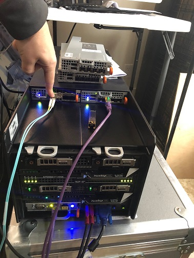

How to Get DPDK with pdump Running
The purpose of this experiment is to get Intel's DPDK framework up and running on a server.
Useful Materials
Info on Linux Drivers for DPDK
Description of the TestPMD Program
DPDK Testpmd Application User Guide
My Environment
I am running a Dell FC640 on a TFX2HE chassis.
Red Hat Release Info
NAME="Red Hat Enterprise Linux"
VERSION="8.1 (Ootpa)"
ID="rhel"
ID_LIKE="fedora"
VERSION_ID="8.1"
PLATFORM_ID="platform:el8"
PRETTY_NAME="Red Hat Enterprise Linux 8.1 (Ootpa)"
ANSI_COLOR="0;31"
CPE_NAME="cpe:/o:redhat:enterprise_linux:8.1:GA"
HOME_URL="https://www.redhat.com/"
BUG_REPORT_URL="https://bugzilla.redhat.com/"
REDHAT_BUGZILLA_PRODUCT="Red Hat Enterprise Linux 8"
REDHAT_BUGZILLA_PRODUCT_VERSION=8.1
REDHAT_SUPPORT_PRODUCT="Red Hat Enterprise Linux"
REDHAT_SUPPORT_PRODUCT_VERSION="8.1"
Red Hat Enterprise Linux release 8.1 (Ootpa)
Red Hat Enterprise Linux release 8.1 (Ootpa)
Kernel Info
Linux dpdkdemo.lan 4.18.0-147.el8.x86_64 #1 SMP Thu Sep 26 15:52:44 UTC 2019 x86_64 x86_64 x86_64 GNU/Linux
Physical Setup

I ran the traffic generator to port 5 of the passthrough module which maps to port 1 my internal x710 card.
Installation
Enable Red Hat Repos
Run subscription-manager list --available | less and find the subscription which
provides CodeReady for x86. Note the pool number associated with the subscription.
Run subscription-manager attach --pool=<POOL_NUMBER> to enable the subscription.
Then run: subscription-manager repos --enable=codeready-builder-for-rhel-8-x86_64-rpms to enable the repo.
Install DPDK
- Download from https://core.dpdk.org/download/
-
Edit the security limits with
vim /etc/security/limits.conf1.Add the following lines at the end of the file. This assumes you are running as root:root hard memlock unlimited root soft memlock unlimited -
Make sure your kernel is up to date with
dnf update -y && reboot. - Run
dnf install -y gcc numactl-devel kernel-devel pciutils elfutils-libelf-devel make libpcap python3 tar vim wget tmux vim mlocate hwloc - Extract dpdk and cd into its directory
- set the environment variable RTE_SDK. It is the directory in which you extracted all the DPDK files.
export RTE_SDK=<YOUR_DIR> - Run
make install T=x86_64-native-linux-gcc CONFIG_RTE_LIBRTE_PMD_PCAP=y CONFIG_RTE_LIBRTE_PDUMP=y DESTDIR=<INSTALL_DIR>to build dpdk. Ensure your install directory exists.
NOTE: The option CONFIG_RTE_LIBRTE_PMD_PCAP=y enabled libpcap support in DPDK. This is required for pdump to work.
Once an DPDK target environment directory has been created (such as x86_64-native-linux-gcc), it contains all libraries and header files required to build an application. When compiling an application in the Linux* environment on the DPDK, the following variables must be exported:
- RTE_TARGET - Points to the DPDK target environment directory.
export RTE_TARGET=/opt/dpdk-19.08/x86_64-native-linux-gcc
You may want to add this variable and RTE_SDK to ~/.bash_profile
Install ELF Tools
Run the following:
dnf install -y python36-devel
pip3 install numpy
pip3 install elftools
pip3 install pyelftools
Configuration
TODO: Need to update the instructions with this. Why can't the setup tool find it?
I had to run modprobe uio && insmod /opt/dpdk-19.08/install/lib/modules/4.18.0-147.el8.x86_64/extra/dpdk/igb_uio.ko
to get this to load. The modprobe uio is necessary because the uio module is a
depency of igb_uio.
Configure vfio-pci to Load on Boot (TODO REMOVE)
-
Go to /etc/modules-load.d/
cd /etc/modules-load.d -
Run
echo vfio-pci > vfio-pci.conf - If you don't reboot you will need to run
modprobe vfio-pci
Configure Ports
-
Move to your dpdk dir and run
./install/share/dpdk/usertools/dpdk-setup.sh. This should give you a menu with all available DPDK options. The menu is setup in such a way that you must perform each step listed in the menu. If things have gone correctly to this point your Step 1 should look like the following:---------------------------------------------------------- Step 1: Select the DPDK environment to build ---------------------------------------------------------- [1] * -
My menu looks like this:
---------------------------------------------------------- Step 1: Select the DPDK environment to build ---------------------------------------------------------- [1] * ---------------------------------------------------------- Step 2: Setup linux environment ---------------------------------------------------------- [2] Insert IGB UIO module [3] Insert VFIO module [4] Insert KNI module [5] Setup hugepage mappings for non-NUMA systems [6] Setup hugepage mappings for NUMA systems [7] Display current Ethernet/Baseband/Crypto device settings [8] Bind Ethernet/Baseband/Crypto device to IGB UIO module [9] Bind Ethernet/Baseband/Crypto device to VFIO module [10] Setup VFIO permissions ---------------------------------------------------------- Step 3: Run test application for linux environment ---------------------------------------------------------- [11] Run test application ($RTE_TARGET/app/test) [12] Run testpmd application in interactive mode ($RTE_TARGET/app/testpmd) ---------------------------------------------------------- Step 4: Other tools ---------------------------------------------------------- [13] List hugepage info from /proc/meminfo ---------------------------------------------------------- Step 5: Uninstall and system cleanup ---------------------------------------------------------- [14] Unbind devices from IGB UIO or VFIO driver [15] Remove IGB UIO module [16] Remove VFIO module [17] Remove KNI module [18] Remove hugepage mappings [19] Exit Script -
Next run option 6 to instert huge pages for NUMA systems. Notice you will be prompted to select an amount of memory on a per processor basis. This is because there are pages associated with each individual processor to increase performance via locality.
- Run option 7 and make sure you receive output and that network devices are listed. My output looks like this:
Network devices using kernel driver =================================== 0000:0b:00.0 'VMXNET3 Ethernet Controller 07b0' if=ens192 drv=vmxnet3 unused=vfio-pci *Active* 0000:13:00.0 'VMXNET3 Ethernet Controller 07b0' if=ens224 drv=vmxnet3 unused=vfio-pci *Active* No 'Baseband' devices detected ============================== No 'Crypto' devices detected ============================ No 'Eventdev' devices detected ============================== No 'Mempool' devices detected ============================= No 'Compress' devices detected ============================== No 'Misc (rawdev)' devices detected ===================================
NOTE: The active keyword means that DPDK thinks the interface is under active use. This means that the interface has routes installed in the routing table.
- Run option 8 to bind an interface to DPDK using the IGB UIO driver.
Performing Packet Capture
Initial Setup
Get the core layout with ./install/share/dpdk/usertools/cpu_layout.py
View your port layout with ./install/share/dpdk/usertools/dpdk-devbind.py -s
If you haven't already load the right kernel modules with: modprobe uio && insmod /opt/dpdk-19.08/install/lib/modules/4.18.0-147.el8.x86_64/extra/dpdk/igb_uio.ko
Starting testpmd
NOTE: The -- separates the argumentsn for the EAL vs TestPMD.
./install/bin/testpmd -l 4,8,10,12 -n 4 -- -i --forward-mode=rxonly
After testpmd has started don't forget to run the start command on the testpmd
command line.
pdump
./install/bin/dpdk-pdump -- --pdump 'port=0,queue=*,rx-dev=/tmp/capture.pcap'
Helpful Tips
Getting CPU Info
DPDK provides a tool for seeing the CPU layout with ./install/share/dpdk/usertools/cpu_layout.py
You can see the logical layout of the cores with cat /proc/cpuinfo
You can alse run lstopo-no-graphics
Notice that the cores alternate back and forth.
Process Types in DPDK
DPDK runs two different types of processes. There are as follows:
- primary processes, which can initialize and which have full permissions on shared memory
- secondary processes, which cannot initialize shared memory, but can attach to pre- initialized shared memory and create objects in it.
Standalone DPDK processes are primary processes, while secondary processes can only run alongside a primary process or after a primary process has already configured the hugepage shared memory for them.
TestPMD
The test pmd manual is available here
Interactive Commands
Starting transmit
start
Get Port Info
show port info all
Forwarding Modes
TestPMD has different forwarding modes that can be used within the application.
- Input/output mode: This mode is generally referred to as IO mode. It is the most common forwarding mode and is the default mode when TestPMD is started. In IO mode a CPU core receives packets from one port (Rx) and transmits them to another port (Tx). The same port can be used for reception and transmission if required.
- Rx-only mode: In this mode the application polls packets from the Rx ports and frees them without transmitting them. In this way it acts as a packet sink.
- Tx-only mode: In this mode the application generates 64-byte IP packets and transmits them from the Tx ports. It doesn’t handle the reception of packets and as such acts as a packet source. These latter two modes (Rx-only and Tx-only) are useful for checking packet reception and transmission separately.
Apart from these three modes there are other forwarding modes that are explained in the TestPMD documentation.
Port Topology Modes
In paired mode, the forwarding is between pairs of ports, for example: (0,1), (2,3), (4,5).
In chained mode, the forwarding is to the next available port in the port mask, for example: (0,1), (1,2), (2,0). The ordering of the ports can be changed using the portlist testpmd runtime function.
In loop mode, ingress traffic is simply transmitted back on the same interface.
Receive Side Scaling
=Receive-Side Scaling (RSS), also known as multi-queue receive, distributes network receive processing across several hardware-based receive queues, allowing inbound network traffic to be processed by multiple CPUs. RSS can be used to relieve bottlenecks in receive interrupt processing caused by overloading a single CPU, and to reduce network latency.
To determine whether your network interface card supports RSS, check whether multiple interrupt request queues are associated with the interface in /proc/interrupts. For example, if you are interested in the p1p1 interface:
# egrep 'CPU|p1p1' /proc/interrupts
CPU0 CPU1 CPU2 CPU3 CPU4 CPU5
89: 40187 0 0 0 0 0 IR-PCI-MSI-edge p1p1-0
90: 0 790 0 0 0 0 IR-PCI-MSI-edge p1p1-1
91: 0 0 959 0 0 0 IR-PCI-MSI-edge p1p1-2
92: 0 0 0 3310 0 0 IR-PCI-MSI-edge p1p1-3
93: 0 0 0 0 622 0 IR-PCI-MSI-edge p1p1-4
94: 0 0 0 0 0 2475 IR-PCI-MSI-edge p1p1-5
huge pages https://access.redhat.com/documentation/en-us/red_hat_enterprise_linux/7/html/performance_tuning_guide/sect-red_hat_enterprise_linux-performance_tuning_guide-memory-configuring-huge-pages